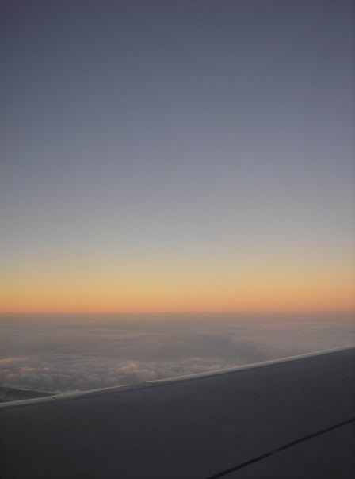
The flight from San Francisco, CA to San Jose, Costa Rica
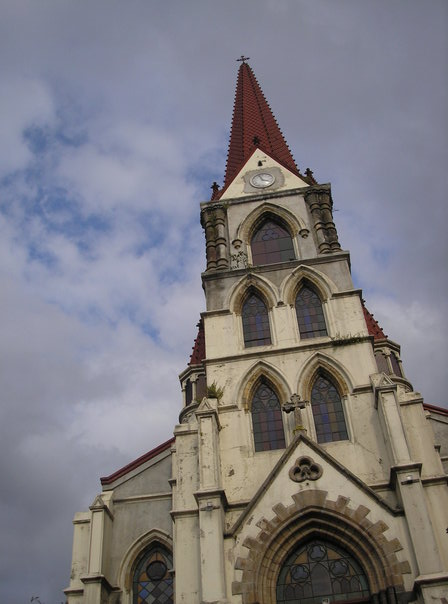
Costa Rica is a very Catholic nation. Many beautiful historic churches in San Jose, which is the Capital of the Country.
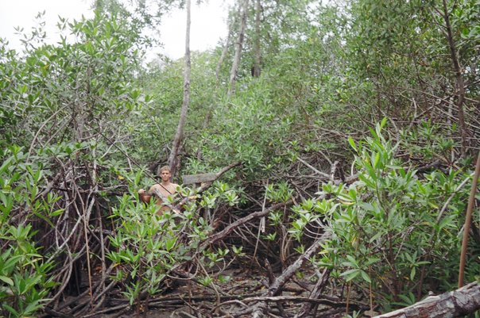
This is me standing in a mangrove area next to a sign that says "Peligroso Cocodrillos", or "Danger Crocodiles" Costa Rica is quite Tropical!
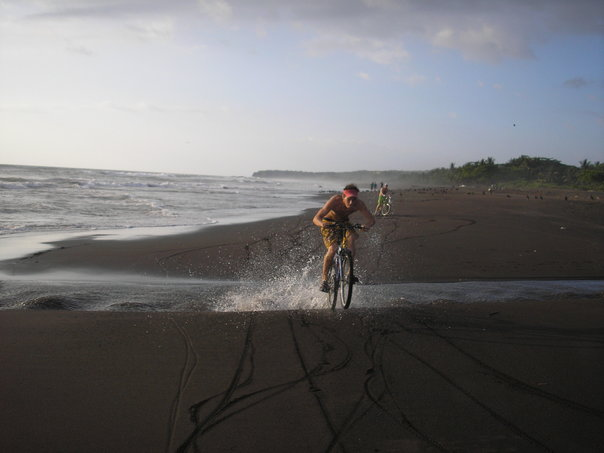
We rented bikes and rode up to a tortuga sanctury on a black sand beach one day (Turtle Sanctuary...I don't know Sanctuary in Spanish...)
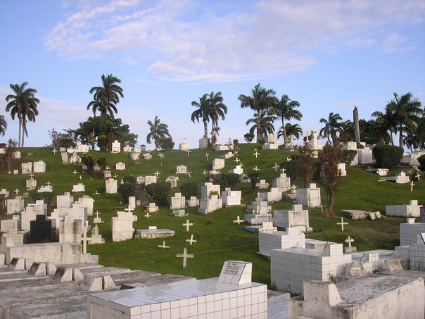
I travelled a bit on the East Coast of Costa Rica, which is so different from the West Coast.
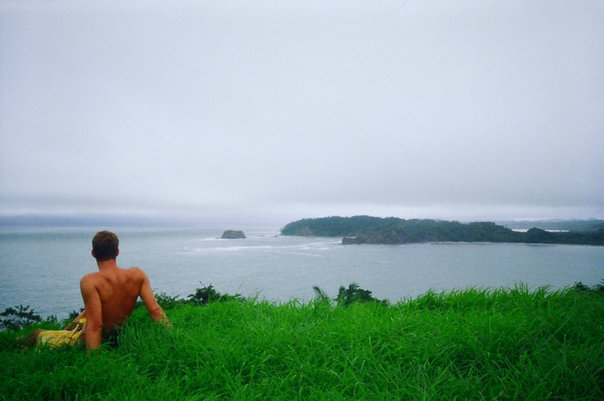
One of my favorite overlooks just South of the small town I lived in for the majority of my time in Costa Rica. You had to scramble up a 50' wall and then walk through the jungle a bit but then there would be a grassy knoll overlooking the Ocean. Just Beautiful.
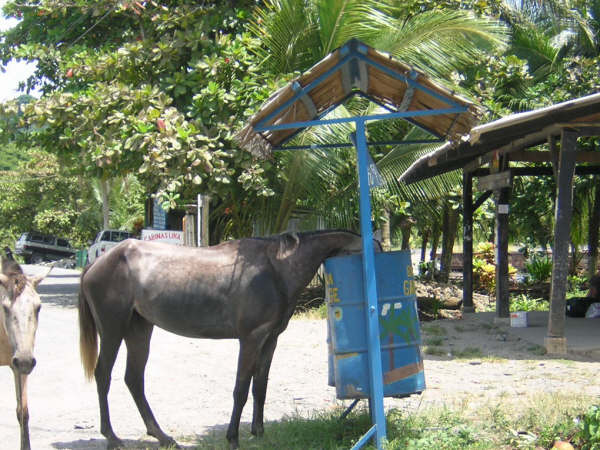
Funny Scenes like this abound. There were wild horses that would run on the beaches and it was just so beautiful to watch.
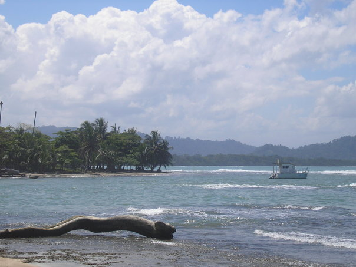
Puerta Viejo
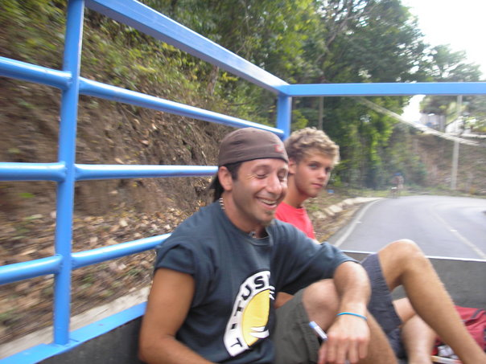
A lot of our transport was in the back of trucks!
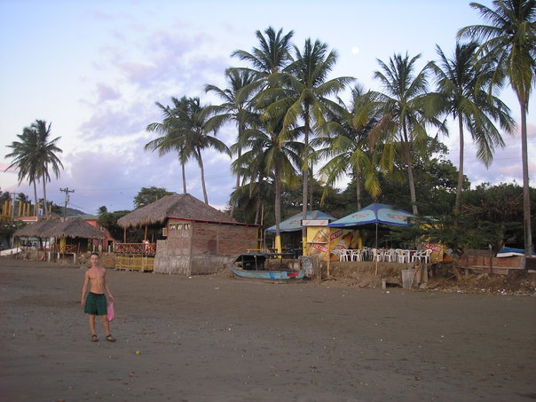
San Juan Del Sur
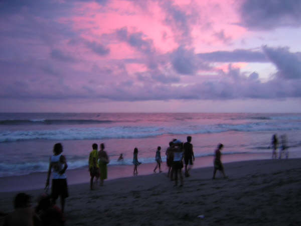
Sunsets on the Beach were usually Pretty Epic.